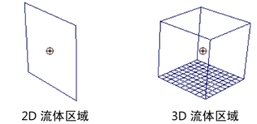

使用该过程可将流体发射器添加到现有流体容器中。会将发射器自动设置为容器的子对象，这样移动容器时它们会一起移动。
可以将多个发射器添加到一个容器中。
将流体发射器添加到容器中
- 选择流体容器，然后选择 >
 。
。 - 在“发射器选项”(Emitter Options)窗口中，修改定义发射器的基本属性的选项（如果需要），然后单击“应用并关闭”(Apply and Close)。
Maya 会在流体容器的中心处创建一个流体发射器，并将其设置为容器的子对象。
 - 在“播放”(Playback)区域中，单击“播放”(Play)按钮可查看流体模拟。
如果是在线框模式下，默认情况下流体会显示为粒子。
若要查看渲染效果的模拟，请切换到着色模式，然后在 fluidShape“属性编辑器”(Attribute Editor)的“显示”(Display)区域中，将“着色显示”(Shaded Display)更改为“已渲染”(As Rendered)。
- 根据需要移动发射器（保持它处于流体容器内），并修改流体容器和流体发射器属性，以达到所需的效果。 注：
如果启用“自动调整大小”(Auto Resize)和“调整到发射器大小”(Resize to Emitter)，流体容器会自动移动到发射器的位置。请参见自动调整大小。